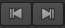

在查看器的顶部有许多有用的工具，其中一些允许您选择通道，调整增益和伽马，以及缩放和缩小查看器中的图像。
有关查看器上方工具的更多信息，请参见 时间线查看器工具 .
查看器底部的工具允许您调整播放设置，包括设置帧范围、选择播放模式和锁定查看器播放范围。
沿时间线拖动橙色标记，以快速提示特定帧或时间码。当前帧或时间码的编号显示在时间线的中心下方。您还可以通过直接在此字段中键入帧或时间码来提示帧或时间码。
提示: 当前帧和输出点字段接受简单的数学函数，例如/-20 向前或向后跳跃 20 帧，或/-00002000 向前或向后跳跃 20 秒。
默认情况下, 核武器工作室 自动调整每个查看器窗口的时间轴，以显示在项目设置中定义的帧范围。如果没有定义帧范围，则读取的第一个图像的帧范围将用作全局帧范围。
Viewer timeline 控件也有一个帧范围源下拉菜单，您可以使用该菜单定义时间线获取其帧范围的位置。您可以将此菜单设置为 全球 , 输入 ,或 自定义 . 全球 是上述默认设置。
的 播放速率 字段 (每秒帧) 最初显示项目的播放速度。 核武器工作室 尝试在整个播放过程中保持这种速度，尽管这取决于图像的分辨率和硬件配置。
注意: 星号 (*) 表示 序列 使用选择的播放速度 帧速率 下拉列表，或者对于新项目, 项目设置 > 序列 > 帧速率 下拉列表。
输入和输出标记使您可以将剪辑的持续时间更改为所需的源部分。
将包含入点和出点的剪辑添加到时间轴时，可以将剪辑滑过标记以调整剪辑的输出。请参阅 时间线编辑工具 欲了解更多信息。
还可以使用 “入” 和 “出” 点导出剪辑或序列的某些部分。请参阅 转码 欲了解更多信息。
要设置输入和输出标记:
| 1。 | 右键单击所需的剪辑或序列，然后选择 打开 > 时间线视图 . |
时间线中打开的剪辑在时间线中有紫色背景。
| 2. | 将播放头移动到输入点的位置，然后按 我 在键盘上。 |
In 点由 In 选项卡标记，时间记录在回放控件中。
| 3. | 将播放头移动到输出点的位置，然后按 O 在键盘上。 |
Out 点由 Out 选项卡标记，时间记录在回放控件中。
注意: 您也可以通过导航到来设置标记 视图 > 马克 在 或 马克 出去 ,通过使用 时间线 菜单到 马克 选择 或 马克 剪辑 依赖于时间轴上的剪辑选择，或者通过右击剪辑实例并选择 打开 > 观众 .
单击并拖动标记以调整其位置，或按住 Ctrl / Cmd 同时移动两个标记，保留它们的相对位置。查看器预览显示选定标记的当前帧，时间码/帧弹出有助于设置新位置。
通过导航到清除剪辑中的标记 观众 > 清除 在点 (Alt I) 和 清除 点 (Alt O)。标记被完全删除，但是你可以通过重新定位播放头并按下来重新应用它们 我 或 O .
提示: 你也可以按 Alt U 同时删除两个标记。
当播放头靠近输入和输出标记时，时间码比例的上半部分控制播放头，下半部分控制标记。
的 播放速率 字段 (每秒帧) 最初显示项目的播放速度。观众试图在整个播放过程中保持这种速度，尽管这取决于图像的分辨率和硬件配置。
下表列出了播放按钮的功能:
|
按钮 |
函数 |
|
|
的 向后玩 和 向前播放 按钮以脚本的帧速率向后或向前播放序列。当你按下播放按钮时，它会切换到停止按钮。 |
|
|
的 后 1 帧 和 向前 1 帧 按钮提示序列到上一帧或下一帧。 |
|
|
的 上一个关键帧 和 下一个关键帧 按钮提示序列到脚本的上一个或下一个关键帧。 |
|
 |
的 第一帧 和 最后一帧 按钮提示序列到第一帧和最后一帧。 |
|
|
的 帧增量 字段允许您指定上一个增量/下一个增量按钮提示序列的帧数。默认情况下，此设置为 10 帧。 |
的 J , K ,和 L 键盘快捷键也可以控制播放。的 K 键盘快捷键被映射到暂停/播放。 J 和 L 映射到向后和向前。还支持组合:
• K J -帧向后。
• K L -向前帧。
• K 在 Viewer-standard 慢跑控件的前三个位置拖动。向左和向右拖动光标将播放头向后和向前移动，一帧。
• 慢跑控制还检测旋转运动，通过框架慢跑。在观众的前第三个顺时针运动，同时保持 K ,前进播放头，逆时针反转播放头。
• K 在观众标准穿梭控制的中间第三个拖动。向左和向右拖动光标可以向后和向前播放，并向查看器的边缘增加帧速率。
• K 在查看器的底部第三处拖动-跳过播放头到绝对时间线位置。
的 播放模式 按钮允许您控制查看器回放序列的次数和方向。单击按钮可在以下模式之间切换:
|
按钮 |
函数 |
|
|
在循环中重复播放序列。 |
|
|
从头到尾反复播放图像。 |
|
|
在输入和输出点之间的部分播放一次，并在输出点停止。如果这些没有标记，那么它将从序列的开始播放到结束。 |
|
|
从序列的开始到结束播放一次，忽略任何进出点。 |
|
|